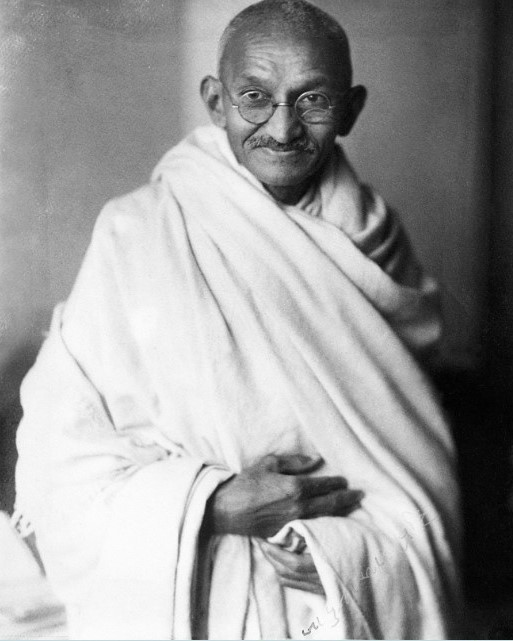

Gandhi had dropped out of the cheapest college he could afford in Bombay.[51] Mavji Dave Joshiji, a Brahmin priest and family friend, advised Gandhi and his family that he should consider law studies in London.[52] In July 1888, his wife Kasturba gave birth to their first surviving son, Harilal.[53] His mother was not comfortable about Gandhi leaving his wife and family, and going so far from home. Gandhi's uncle Tulsidas also tried to dissuade his nephew. Gandhi wanted to go. To persuade his wife and mother, Gandhi made a vow in front of his mother that he would abstain from meat, alcohol and women. Gandhi's brother Laxmidas, who was already a lawyer, cheered Gandhi's London studies plan and offered to support him. Putlibai gave Gandhi her permission and blessing.[50][54] Gandhi in London as a law student On 10 August 1888, Gandhi aged 18, left Porbandar for Mumbai, then known as Bombay. Upon arrival, he stayed with the local Modh Bania community whose elders warned him that England would tempt him to compromise his religion, and eat and drink in Western ways. Despite Gandhi informing them of his promise to his mother and her blessings, he was excommunicated from his caste. Gandhi ignored this, and on 4 September, he sailed from Bombay to London, with his brother seeing him off.[53][55] Gandhi attended University College, London, a constituent college of the University of London. At UCL, he studied law and jurisprudence and was invited to enrol at Inner Temple with the intention of becoming a barrister. His childhood shyness and self-withdrawal had continued through his teens. He retained these traits when he arrived in London, but joined a public speaking practice group and overcame his shyness sufficiently to practise law.[56] He demonstrated a keen interest in the welfare of London’s impoverished dockland communities. In 1889, a bitter trade dispute broke out in London, with dockers striking for better pay and conditions, and seamen, shipbuilders, factory girls and other joining the strike in solidarity. The strikers were successful, in part due to the mediation of Cardinal Manning, leading Gandhi and an Indian friend to make a point of visiting the cardinal and thanking him for his work.[57] Vegetarianism and committee work Gandhi's time in London was influenced by the vow he had made to his mother. He tried to adopt "English" customs, including taking dancing lessons. However, he did not appreciate the bland vegetarian food offered by his landlady and was frequently hungry until he found one of London's few vegetarian restaurants. Influenced by Henry Salt's writing, he joined the London Vegetarian Society and was elected to its executive committee[58] under the aegis of its president and benefactor Arnold Hills. An achievement while on the committee was the establishment of a Bayswater chapter.[59] Some of the vegetarians he met were members of the Theosophical Society, which had been founded in 1875 to further universal brotherhood, and which was devoted to the study of Buddhist and Hindu literature. They encouraged Gandhi to join them in reading the Bhagavad Gita both in translation as well as in the original.[58] Gandhi had a friendly and productive relationship with Hills, but the two men took a different view on the continued LVS membership of fellow committee member Thomas Allinson. Their disagreement is the first known example of Gandhi challenging authority, despite his shyness and temperamental disinclination towards confrontation. Allinson had been promoting newly available birth control methods, but Hills disapproved of these, believing they undermined public morality. He believed vegetarianism to be a moral movement and that Allinson should therefore no longer remain a member of the LVS. Gandhi shared Hills' views on the dangers of birth control, but defended Allinson's right to differ.[60] It would have been hard for Gandhi to challenge Hills; Hills was 12 years his senior and unlike Gandhi, highly eloquent. He bankrolled the LVS and was a captain of industry with his Thames Ironworks company employing more than 6,000 people in the East End of London. He was also a highly accomplished sportsman who later founded the football club West Ham United. In his 1927 An Autobiography, Vol. I, Gandhi wrote: The question deeply interested me...I had a high regard for Mr. Hills and his generosity. But I thought it was quite improper to exclude a man from a vegetarian society simply because he refused to regard puritan morals as one of the ob
